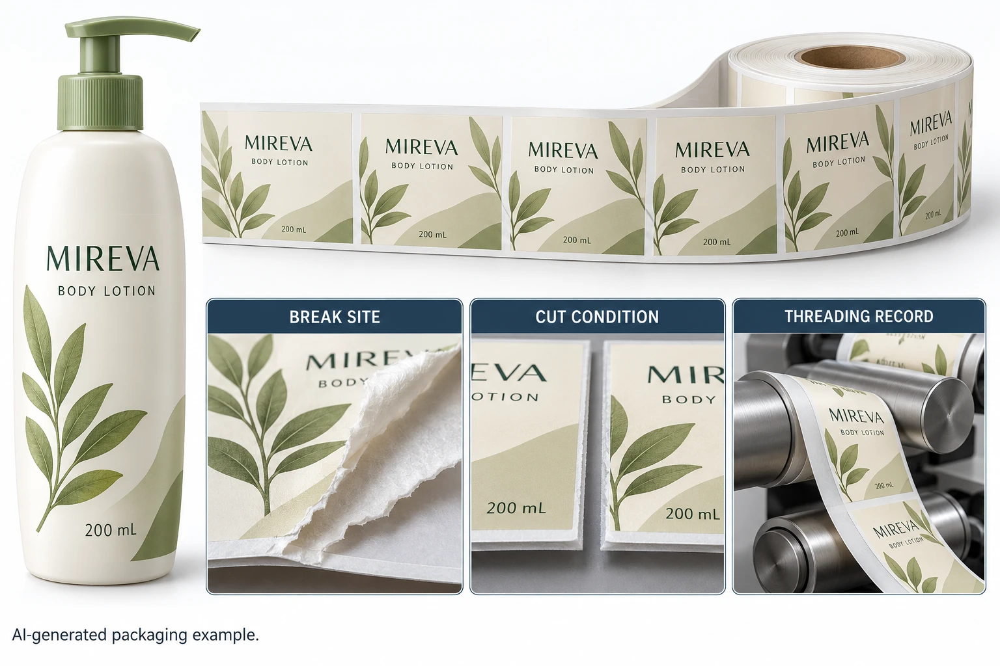

Locate the break in the process
Ask the authorized operator where the break occurred: at an identified area of the supplied web, near the dispensing stage or elsewhere in the path. Record the actual equipment and configuration under the site's procedures. Preserve available machine records rather than reconstructing settings from memory.
Photographs or an authorized stationary inspection can help locate the feature. This guide does not ask anyone to reach into moving equipment, bypass guards or change tension to see what happens. Investigation belongs to trained personnel using the relevant equipment instructions.
Keep the actual sequence clear. A web that broke before application is different from a label tearing during removal from a bottle. The same informal phrase, label failure, can send those two events to entirely different reviewers.
Distinguish the properties being discussed
Liner release, backing mechanical strength, converted cut condition and the line's actual handling are different inputs. Ask which property any supplied data describes, what units and method apply and which construction was tested.
The liner-release guide explains why a release entry should not be treated as bottle adhesion. Apply the same discipline here: do not turn a release figure into a tensile property just because both relate to the backing.
A caliper comparison also needs its scope. The thickness and basis-weight guide distinguishes layers and units. A thicker stated construction is not automatically a complete solution to a break event. Ask the relevant technical party what evidence addresses the observed condition.
Preserve the break and its identity
Retain the relevant sides of the break and surrounding web if available, following the supplier's sample instructions. Mark their relationship without altering the feature being reviewed. Record the job, artwork, construction, roll and location information actually available.
Ask whether the break appears associated with a repeated cut feature, an edge or another identified position. These are observations for investigation, not proof that the die, liner or equipment caused the event. If a section was already removed or discarded, state the limitation rather than inventing its appearance.
Include whether the concern occurred once or at separately identified events. Do not describe an entire order as affected from one break, and do not hide several traceable events inside an unqualified one-off description. The extent informs the review scope even before the cause is known.
Use an event-to-evidence map
The following sheet is an editorial investigation aid, not a line-setting recipe or a test standard.
| Question | Evidence to identify | Technical handoff |
|---|---|---|
| What broke? | Actual layer and retained section | Converter confirms material being examined |
| Where did it break? | Web location and stationary equipment context | Operator identifies process stage |
| What condition was present? | Cut, edge and visible feature observations | Reviewer selects the relevant investigation |
| Which supply? | Complete construction, job and roll reference | Supplier connects production records |
| Which operation? | Authorized configuration and recorded event history | Equipment owner evaluates operating relevance |
| What data exists? | Method, units and scope of supplied results | Avoid substituting release data for strength |
| What next? | Agreed trial, correction or further sample | Named parties control release |
Start with the retained material and event identity. Obtain the operator's relevant record and the converter's requested examination. Compare the actual evidence with the proposed correction, then document which question remains unresolved.
If the proposed remedy changes the liner, ask what else changes and which receiving checks must be repeated. If the proposal changes the line configuration, the authorized equipment team should determine and record it. Do not approve both changes without knowing what the resulting trial actually demonstrates.

Choose the correction that addresses the evidence
A hypothetical investigation may identify a concern in a retained converted section. That gives the supplier a specific material review task. It still needs a supported disposition and a relevant check of any corrected supply.
Another investigation may find that the event requires an equipment-specific review even though an isolated material sample looks satisfactory. Choosing a different film name from a catalogue would not settle that operating question. Keep the material and equipment parties involved until they agree the evidence and next action.
For custom cosmetic labels, provide the construction, job and roll, receiving equipment reference and concise event description. Include retained-sample availability and the exact data being discussed. The inquiry form prepares a message; records travel separately through email or WhatsApp. Ask for a review of the actual break, rather than a promise based on the wrong property.